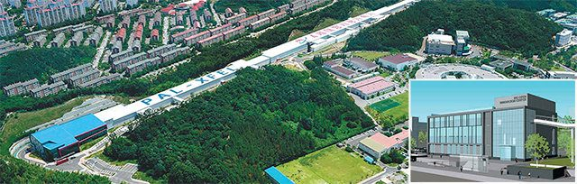
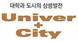
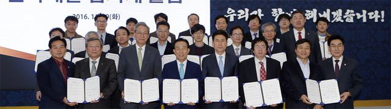
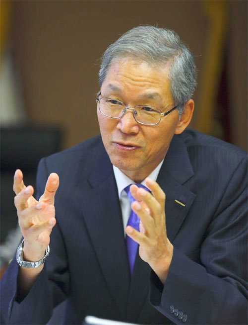
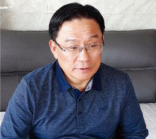
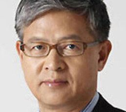
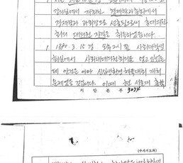

매체 동아일보보도일 2018-04-19
포스텍은 2016년 대학과 지방자치단체, 기업이 협력해 도시의 경제 체질을 근본적으로 바꿔 지속 가능한 발전을 이뤄내는 프로젝트인 ‘유니버+시티(Univer+City)’라는 화두를 던졌다. BOIC는 그 실천의 출발점이다.
<상> 한국형 도시변화 첫 도전
포스텍은 경북도, 포항시와 함께 2016년 9월 세계에서 세 번째로 설립된 4세대 방사광가속기를 기반으로 한 신약 개발 사업을 집중적으로 육성해 포항시를 세계적인 제약 도시로 탈바꿈시킬 계획을 진행하고 있다. 제약 산업의 젖줄이 될 BOIC(작은 사진)는 경북도와 포항시의 지원 아래 내년에 완공된다. 포스텍 제공
《한국GM의 공장 폐쇄로 전북 군산시 전체가 휘청대고 있다. 5년 전 군산시와 같은 위기를 맞았던 미국 디트로이트시는 파산 선언까지 했다. 녹슨 지대라는 뜻의 ‘러스트 벨트’로 불렸던 디트로이트는 지금 첨단 산업 도시로 부활했다. 대학과 도시가 힘을 합쳐 노력한 결과다. 대학과 도시의 상생 프로젝트인 ‘유니버+시티’가 국내에서도 싹을 틔우기 시작했다. 국내외 유니버+시티 현장과 전문가 의견을 3회에 걸쳐 소개한다.》
포스텍은 개교 33주년인 내년에 특별한 새 식구를 맞는다. 지하 1층, 지상 4층, 연면적 약 1만 m² 규모로 포스텍 교정 내 생명공학연구센터 옆에 들어서는 ‘바이오 개방형 혁신 센터(BOIC)’다.
4세대 방사광가속기를 활용한 연구 기반 시설인 BOIC는 아직 본격적인 공사가 시작되지 않았는데도 벌써부터 교내외에서 큰 주목을 받고 있다. BOIC 건설 비용 272억4000만 원 중 95억 원을 경북도와 포항시가 지원하고, 나머지 비용도 포스텍이 개발한 기술을 이전받아 사업화에 성공한 기업인 제넥신에서 내기 때문이다.
○ 신약 개발 메카 꿈꾼다
김도연 포스텍 총장은 2015년 취임 일성으로 “대학의 역할이 바뀐 만큼 기존의 교육을 통한 ‘인재 가치’ 창출과 연구를 통한 ‘지식 가치’ 창출에 더해 창업과 창직(創職)을 통한 ‘사회·경제적 가치’까지 창출해 내야 한다”고 강조했다.
이에 따라 교내에서는 사회·경제적 가치 창출을 위한 다양한 아이디어가 쏟아져 나왔다. 그중 가장 눈길을 끈 것이 생명공학연구센터장인 장승기 생명과학과 교수가 제안한 4세대 방사광가속기를 활용한 신약 개발 사업이었다.
장 교수는 “신약을 개발하기 위해 세포막단백질 구조를 알려면 4세대 방사광가속기가 필요한데 이런 첨단시설은 2016년 포스텍에 설립된 것을 포함해 세계에 3대밖에 없다”며 “포항시는 세계적인 연구역량을 갖춘 포스텍이 있어 세계적 신약 개발의 메카로 성장할 잠재력이 충분하다”고 말했다.
○ 포스텍-경북도-포항시 3각 협력
김도연 포스텍 총장, 김관용 경북도지사, 이강덕 포항시장(앞줄 왼쪽에서 세 번째부터)은 2016년 신약개발 협의체를 출범시켰다. 포스텍 제공
포스텍은 장 교수의 제안을 실현하기 위해 곧바로 경북도, 포항시와 실무협의회를 만들었다. 지역 경제를 떠받쳐 왔던 철강 산업의 침체로 위기의식을 느끼고 있던 김관용 경북도지사와 이강덕 포항시장도 팔을 걷어붙이고 나섰다. 오옥균 포스텍 연구기획부처장은 “경북도, 포항시의 공무원들과 함께 6개월 동안 세계적인 제약 도시인 스위스 바젤시까지 찾아가 가속기를 활용한 신약 사업의 타당성을 조사했다”고 말했다.
신약 산업의 성장 가능성을 확인한 경북도와 포항시는 2025년까지 포항시에 신약 개발 클러스터를 조성하는 장기 계획을 세웠다. 그 첫 번째 단계로 포스텍과 함께 BOIC를 설립하기로 했다. 권혁원 포항시 미래전략산업과장은 “포스코에서 받는 법인세가 시의 주요 재원인데 2010년 900억 원 정도에서 3, 4년 전부터는 300억 원 정도로 줄었다”며 “철강 산업의 쇠퇴에 대비해 미래의 먹거리 산업인 신약 산업에 투자하기로 했다”고 말했다.
○ 해외 기업 연구소 속속 입주
공동 연구시설인 BOIC에는 최근 바이오산업 진출을 선언한 포스코를 포함해 이미 여러 기업들이 입주하기로 했다. 스웨덴의 카롤린스카 연구소(당뇨내분비연구센터)와 미국 애리조나주립대의 바이오디자인연구소 등 세계적인 연구기관들도 BOIC에서 포스텍과 함께 가속기 기반 신약 연구를 하기로 했다. BOIC에 더 많은 해외 기업 연구소를 유치하고 포항시의 신약 도시 이미지를 강화하기 위해 포스텍과 포항시는 올 하반기에 국제포럼도 계획하고 있다.
BOIC에 국내외 제약사와 벤처기업들이 입주하면 생산직과 연구 직종에서만 100여 개의 새로운 일자리가 생길 것으로 전망된다. 장승기 센터장은 “BOIC는 포항을 제약 도시로 만드는 마중물이 될 것”이라며 “BOIC가 대학의 연구 역량과 지방자치단체의 재정 지원이 결합해 도시의 발전을 이끄는 첫 번째 성공 사례가 될 것”이라고 말했다.
성영철 제넥신 대표(62)는 포스텍 융합생명공학부 교수 시절인 1999년 직원 3명과 함께 학내 벤처로 창업한 회사를 시가 총액 2조 원이 넘는 글로벌 바이오 기업으로 키웠다. 성 대표는 “BOIC 같은 인프라 확장을 통해 신약 개발 연구와 창업에 유리한 생태계를 조성하면 경쟁력 있는 인재와 기업이 몰려올 것”이라며 “포항이 대학 중심으로 발전하는 도시 모델로 성공하면 다른 도시에도 이런 혁신이 확산될 것”이라고 말했다.
○ 미래도시 기술 연구에도 박차
포스텍은 ‘유니버+시티’를 움직이는 또 다른 엔진으로 ‘미래도시 개방형 혁신센터(FOIC)’도 운영하고 있다. 인공지능그룹, 빅데이터 연구센터, 스마트 공장 등 4차 산업혁명의 핵심 분야에서 포스텍의 뛰어난 연구 인력을 활용해 지자체, 기업들과 공동으로 미래도시에 필요한 기술을 개발하고 사업화하는 공간이다. 스마트시티 등의 수요가 커지면서 미래도시 시장은 세계적으로 1500조 원으로 추산되고 있다.
포스텍은 포스코 등 기업들과 협력할 수 있는 훌륭한 환경을 갖추고 있어 FOIC의 전망이 매우 밝다. 현재는 국토교통부의 스마트시티 통합플랫폼 사업 대상자로 선정된 포항시를 미래도시로 탈바꿈시키기 위한 청사진을 포항시와 짜고 있다.
김도연 총장
“더 어려워지기 전에 대학-도시 상생해야”▼
‘유니버+시티’ 전도사
“망설이다가 공장들이 문을 닫고 설비들이 뜯겨져 나가는 폐허의 조건에서 도시 재생에 도전해서는 안 된다. 당장 현재의 역량을 충분히 활용할 수 있는 지혜를 모아 상생의 길로 나아가야 한다. 더 어려워지기 전에 상생하자는 것이 ‘유니버+시티’의 핵심이다.”
김도연 포스텍 총장(사진)은 기존 산업의 침체로 도시들이 생존 위기에 처한 지금이 대학과 도시가 협력하는 ‘유니버+시티’가 절실한 때라고 강조했다. 그는 최근 15개 대학 총장, 7개 자치단체장과 함께 ‘유니버+시티, 대학과 도시의 상생발전’이란 책을 출간하며 ‘유니버+시티’ 전도사로 뛰고 있다.
―대학이 도시 발전에 어떻게 기여할 수 있나.
“도시 구성원이 활기를 띠어야 도시가 번성한다. 도시 경제가 어려워져 활기가 사라질 때 필요한 것이 바로 대학생들의 활기다. 대학이 도시 발전의 중심이 돼야 한다. 실제 제조업 쇠퇴로 ‘러스트 벨트’로 불렸던 미국 오대호 주변의 도시 중에 경제성장률이 높은 곳에는 대부분 연구중심 대학이 자리 잡고 있다. 대학은 새로운 지식가치를 창출하고 기업이 이를 활용해 경쟁력을 높이면서 도시가 활력을 되찾은 것이다. 대학과 기업의 긴밀한 협력, 중앙정부 및 지자체의 협력 연결 역할이 도시 부활의 핵심이다.”
―대학의 창업이 왜 중요한가.
“어느 나라나 대기업의 일자리 확충은 한계점에 달했다. 미국의 경우 신규 일자리의 절반 이상은 전체 기업의 4%에 불과한 벤처기업이 만든다. 포스텍이 창업을 통해 경제적 가치를 창출하면 여기서 번 돈을 다시 교육과 연구에 투자하고, 좋은 교육을 받고 연구한 학생들이 새로운 창업을 할 수 있다. 그러면 포항에는 좋은 벤처기업과 일자리가 생기는 선순환 구조가 이뤄진다. 그래서 지자체의 전폭적인 지원이 필요하다.”
―우리나라 도시와 대학의 협력 실태는 어떤가.
“그동안 도시는 도시대로 빠르게 발전했고, 대학도 스스로 잘 발전해왔다. 하지만 이제 상황이 변했다. 서로 힘을 합치지 않으면 도시가 죽는다. 포스텍이 성공 모델을 만들어 보겠다. 빨리 가려면 혼자 가고, 멀리 가려면 함께 가라는 말처럼 지금까지 각자 빨리 발전해온 도시와 대학이 이제는 함께 가야 한계를 넘어 더 발전할 수 있다.”
―유니버+시티가 성공하기 위해 필요한 것은 무엇인가.
“대학과 도시 모두 인식을 바꿔야 한다. 대학 홈페이지를 보면 교육목표가 하나같이 글로벌 인재 육성이다. 하지만 앞으로는 지역사회에 더 관심을 가져야 한다. 지자체도 마찬가지다. 대학과 지자체가 서로의 존재를 소중하게 여겨야 한다.”
[출처]
포항=이현두 기자
ruchi@donga.com
, [동아일보]
포스텍, 지자체와 손잡고 도시성장 ‘새로운 모델’ 만든다
_ 2018-04-19
창닫기
기사를 추천 하셨습니다
포스텍, 지자체와 손잡고 도시성장 ‘새로운 모델’ 만든다
베스트 추천 뉴스
대수장 “정부, 핵폭탄 터져야 北도발 인정할건가”
뇌물 혐의 무죄 박찬주 전 대장 “지금 군은 군이 아니다”
[박제균 칼럼]희망이 희망고문 된 2년
심재철, 유시민 합수부 진술서 공개…“학우들 행적 상세히 기록”
[오늘과 내일/이승헌]프랜시스 후쿠야마의 2년 전 예언
[오늘과 내일/하임숙]시스템반도체, 임계점 넘어서는 도전 되라
Copyright by dongA.com All rights reserved.







